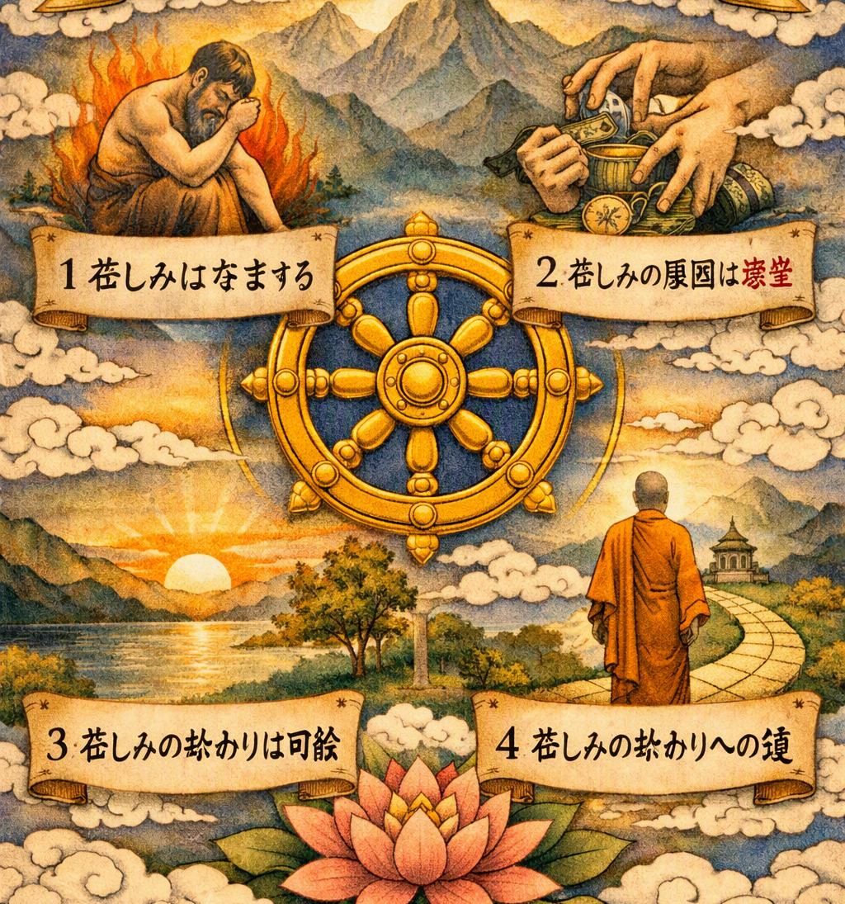

Четыре благородные истины
Четыре благородные истины - это основа учения Будды о природе человеческой жизни, страдания и освобождения. Они называются "истинами", потому что описывают то, что Будда увидел и осознал через собственный опыт, а "благородными" - потому что понимание этих истин ведёт человека к освобождению от страдания.

Четыре благородные истины - это основа учения Будды о природе человеческой жизни, страдания и освобождения. Они называются "истинами", потому что описывают то, что Будда увидел и осознал через собственный опыт, а "благородными" - потому что понимание этих истин ведёт человека к освобождению от страдания.
«Не принимай истину лишь потому, что услышал её от другого. Наблюдай за своей жизнью и своим умом, познай страдание, узнай его причину, увидь возможность освобождения и следуй путём, ведущим к нему.»
Первая истина — страдание
Будда учил, что человеческая жизнь связана со страданием и неудовлетворённостью. Рождение, старость, болезнь, смерть, разлука с близкими и потеря того, чем мы дорожим, являются частью человеческого существования. Даже то, что приносит радость, не остаётся неизменным. Всё в мире подвержено переменам.
Вторая истина — причина страдания
Причиной страдания является жажда и привязанность. Человек стремится получить желаемое и удержать то, что ему дорого. Но всё изменяется, поэтому привязанность к непостоянному неизбежно приносит разочарование и страдание.
Третья истина — прекращение страдания
Будда учил, что страдание может прекратиться. Когда человек освобождается от жажды, привязанности и заблуждений, он постепенно освобождает свой ум от причин страдания. Это состояние освобождения называется Нирваной.
Четвёртая истина — путь к освобождению
Существует путь, ведущий к прекращению страдания. Будда назвал его Благородным восьмеричным путём. Он включает правильное воззрение, намерение, речь, действие, образ жизни, усилие, осознанность и сосредоточение. Следуя этому пути, человек развивает мудрость, нравственность и спокойствие ума, постепенно приближаясь к освобождению.
Мир приходит изнутри. Не ищи его снаружи.Будда Шьякмуни